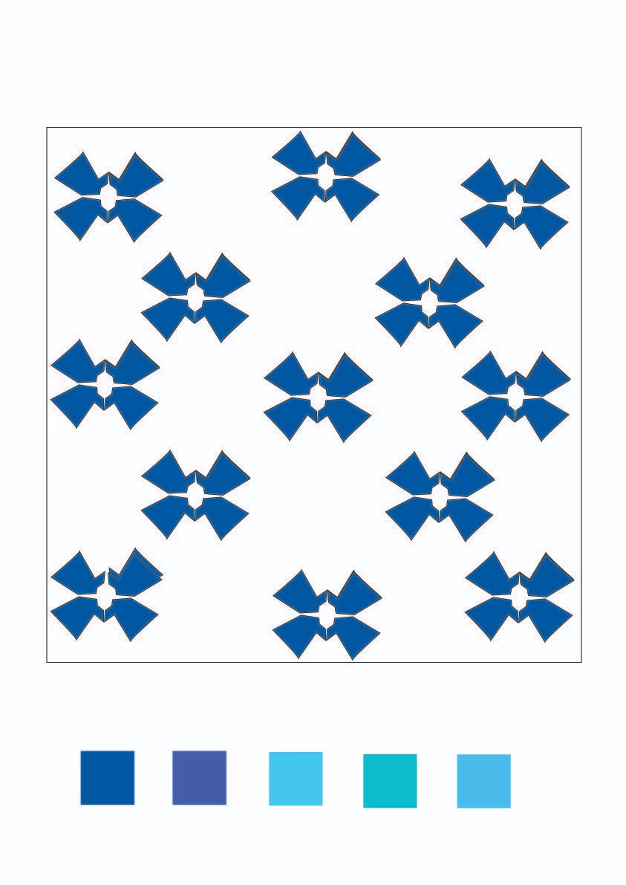
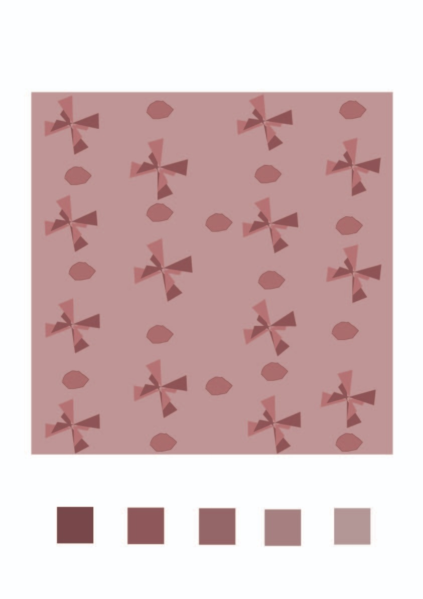
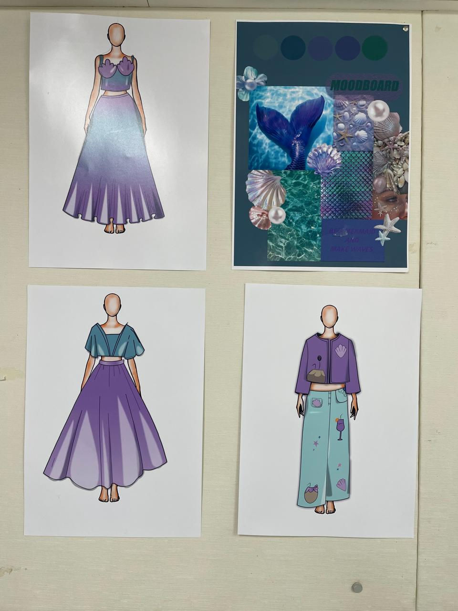
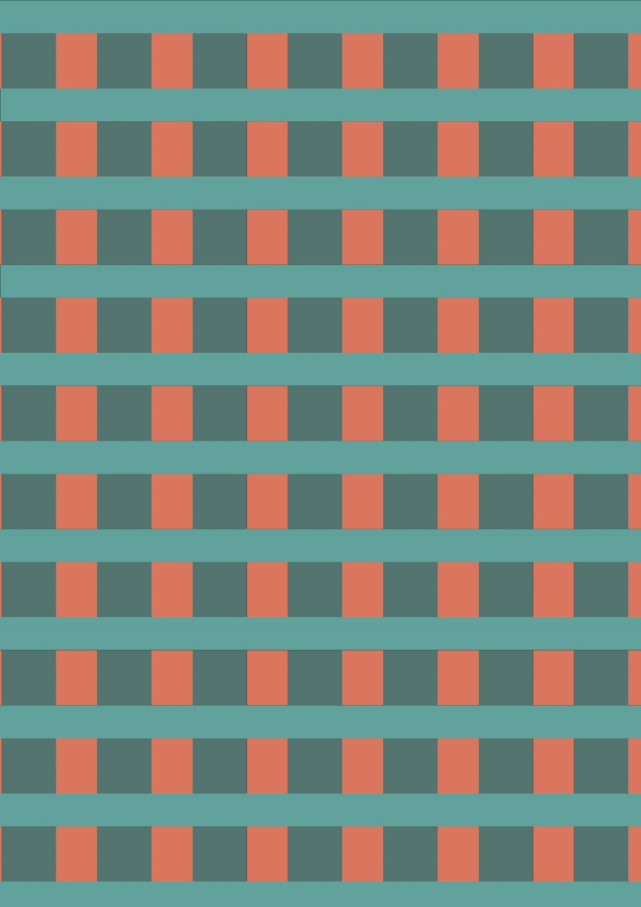
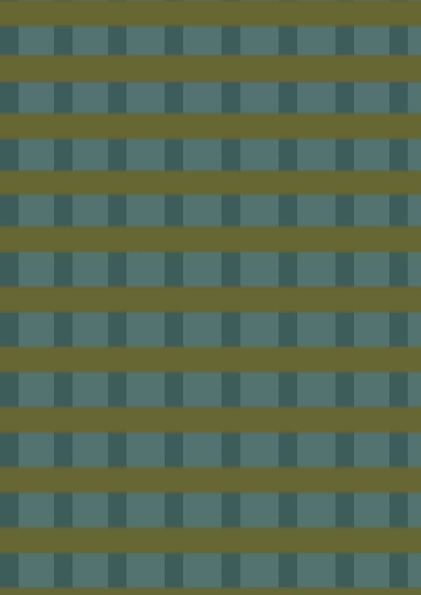

Project Showcase
Design Development & Final Outcomes

Research & Inspiration Board
Initial mood board exploring textures, colour palettes, cultural references, and trend forecasting.

Concept Development
Early design sketches and silhouette experimentation developed during the concept phase.

Technical Drawings
Detailed garment specifications and construction planning.

Initial Draping Experiment
Exploring silhouette and volume through free-form draping techniques.

Draping Refinement
Refining proportions and developing stronger garment structure.

Final Garment
Completed design showcasing fabric application, craftsmanship, and styling decisions.